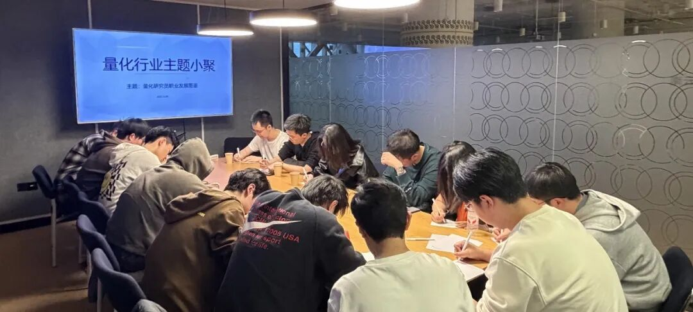

主题回顾
本次主题：量化研究员职业发展图鉴
主题背景：距离2025年结束还有不到3周，大家又到了复盘过去一年成果，展望明年的关键时刻。根据量化白皮书调查显示，业内普遍认为做好Quant的关键素质先后顺序分别是：扎实的专业技能、聪明、快速领悟、对世界的认知、勤奋努力。聪明有助于单次研究的胜率，而努力则决定长期的水平。除此之外，还有哪些因素可以推动Quant从优秀走向卓越？
交流话题：1.从业者分享自己的职业生涯，如工作内容、职业发展等？2.交易所新规定对股票T0以及转债高频的影响？3.模型优化及对底层因子的要求？4.不同文化的公司做出来的产品有什么不同？5.2026年有哪些值得关注的赛道，Senior QR、PM、自营的成长与发展路线。
小聚成员
本次活动根据大家填写的报名表，依照“深度交流+多元讨论”的主旨，一共邀请15位小伙伴参与，从事量化行业全职工作的伙伴11位，目前在量化行业实习的伙伴4位，值得一提的是，参与本次小聚的全职和实习伙伴所在公司多为知名百亿私募与头部自营机构。

活动反馈
很开心能与大家交流，大家对于股票T0与日内截面的见解让我受益颇多，同时也惊叹于K老师的行业经验与W同学的哲理洞察。——Quant 流浪者
本次小聚收获颇多，印象最深刻的还是听到了很多优秀的前辈工作创作的经历，以及在行业赚得盆满的历程，同时也听到了小伙伴们分享的一些工作干货，收获满满。——某QR
今天听了K老师的10年量化背景和经历的分享，备受鼓舞，原来真的有大佬可以独立在家做高频，有了这样的例子，自己做研究更有动力了。——Winter
K老师和I老师的分享都很有帮助。K老师以独立交易者的视角，分享了十年以来参与国内市场高频交易的感受，有关方法论、硬件设施、收益变化情况等细节非常干货。——某QR
K老师和C老师的解答对我有非常多的启发，W同学偏哲学方法论的内容也让人眼前一亮。公募的某位大佬对市场的理解非常透彻。感觉量化小聚真的是门槛很低的了解市场前沿内容的站点。下次还来，赞美高总！——QR
今天W同学的发言对我很有启发。作为即将入行的应届生而言，筛选公司、团队的方法论有助于我们真正去实现个人价值的最大化。——某算法实习生
今天K老师、C老师和K总的发言让我收益很多，开阔了我对高频交易的理解，以前不怎么做，也了解不多。非常感谢有这样的机会与大家共同交流，相互学习，祝大家越来越好！——某公募QR
今天在场的几位老哥大发言都比较有启发，尤其是关于外资的share文化，以及讨论不同公司文化带来影响的部分。——K
今天W同学的发言对我有很大启发！他对量化行业的公司格局、氛围、方法论的分享和体会给我很多选择公司的帮助。——某私募实习生
今天有量化十年的老人对量化行业的分享让人很有启发。让我感受到做一个很复杂的模型和做一个长期沉淀的量化人思路是很不同的。——某QR
W同学的发言对我有启发，一些新兴市场比如，有一些easy money的机会可以尝试赚钱。还有别的老师的发言对我也有启发，比如如何把一些老因子经过一些改进经过AI可以提升收益能力。——QR
今天很高兴更够参加这次小聚，印象最深刻的是K老师关于自己十多年量化经验的分享，很有启发！——某QR
今天C师兄的关于因子筛选的方法论分享启发我很多，以及W同学分享的关于量化私募“兴与落”的公司架构与发展路径的思考也对实习生很有帮助。——实习生QR
今天L前辈的发言对我有启发，看到了有内外资工作经验的QR对于不同文化的理解，了解了其它类型的工作模式。很开心今天能和各位同伴讨论学习。——某百亿实习QR

大家的收获札记